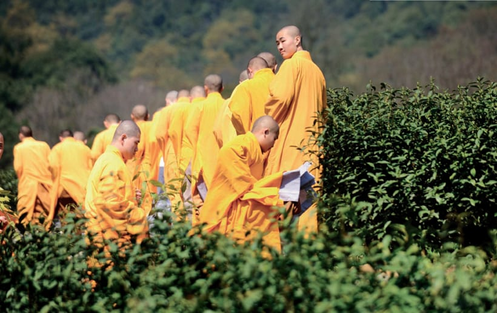
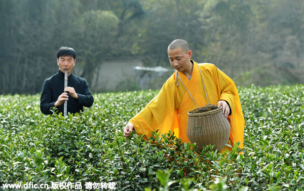
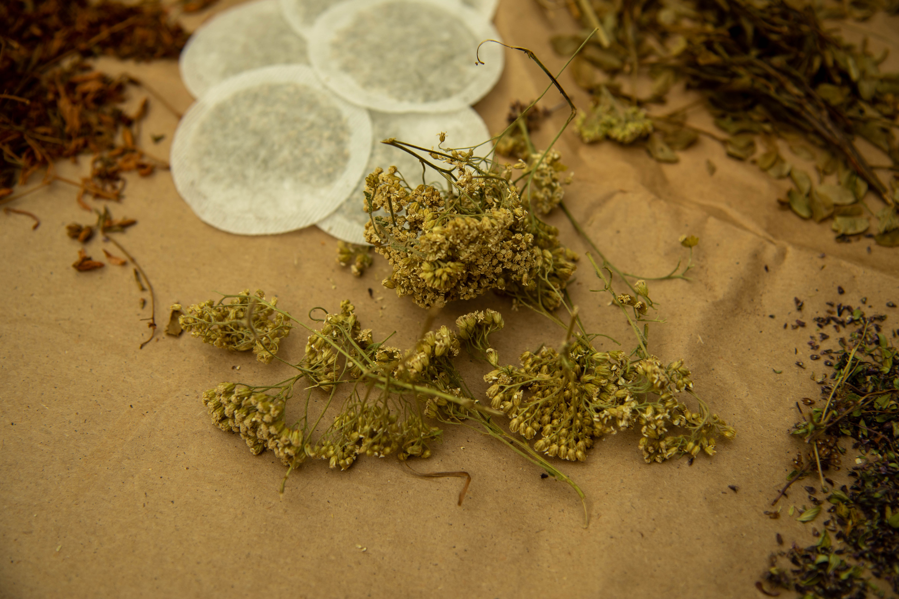
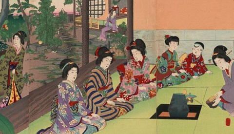
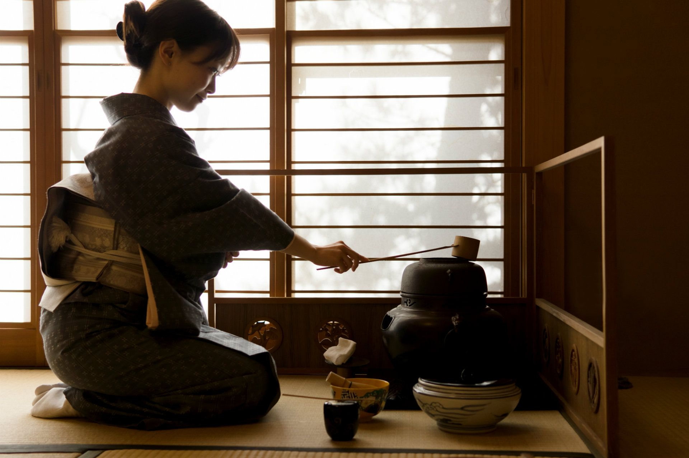

Ceaiul - o experienta religioasa |
|---|
| 
 |
Ceaiul – de la budism |
|---|---|
|
Unul dintre motivele pentru care ceaiul depășește băuturile normale pentru a deveni un bun spiritual este din cauza relației sale strânse cu religia. Există o legendă miraculoasă despre legătura dintre ceai și budism. Bodhidharma, care a fost creditat pentru transmiterea budismului în China, medita la Muntele Song. El a jurat că va medita timp de nouă ani consecutiv fără somn și în fiecare zi stătea în tăcere cu picioarele încrucișate în poziția lotusului într-o peșteră cu fața la zid. În primii trei ani, meditația sa a avut un mare succes. Niciuna dintre distragerile exterioare nu a intervenit. Dar, odată cu trecerea timpului, nu a mai putut să reziste și în cele din urmă a adormit. După ce s-a trezit, lui Bodhidarma i-a fost rușine de eșecul său și furios de lipsa lui de perseverență. Pentru a-și arăta hotărârea pentru Zen, și-a tăiat pleoapele, le-a aruncat pe pământ și și-a continuat meditația. Interesant este că pleoapele lui au crescut într-un arbore de ceai. În următorii cinci ani, Bodhidarma și-a păstrat capul liber, iar meditația sa a avut, de asemenea, succes. Meditația de nouă ani a ajuns în sfârșit la ultimul an. Somnolența i se strecură din nou în cap. A smuls câteva frunze de pe arborele de ceai de lângă el și a început să mestece. Din nou a devenit treaz brusc. Bodhidarma a fost în sfârșit capabil să-și țină jurământul și să îndeplinească nouă ani de meditație. totul datorită arborelui de ceai. Ceaiul, desigur, a existat în China cu mult înainte ca vreun monahi să aducă budismul. Atunci de ce preferă budismul atât de mult ceaiul? Există trei motive majore pentru aceasta. În primul rând, ceaiul îi ține pe călugări atenți atunci când meditează. În al doilea rând, ceaiul ajută la digestia. Și în al treilea rând, ceaiul calmează mintea și suprimă dorințele. Ceaiul a devenit o parte integrantă a practicii budiste în China, atât de mult încât se spune că „ceaiul și Zen au aceeași aromă”, iar unii au ajuns să interpreteze acest lucru în sensul că ceaiul și Zen sunt același lucru. Mănăstirile budiste din China promovează combinația dintre agricultură și meditație. Multe mănăstiri cresc arbori de ceai. Pe lângă consumul propriu, ei își oferă ceaiul și oamenilor de rând la diferite evenimente filantropice de la mănăstiri, astfel încât toată lumea să se bucure de dragostea lui Buddha. De-a lungul a miilor de ani de istorie a băutării ceaiului, budismul a avut o mare influență în formarea lui. În timpul dinastiei Tang și Song, budismul a fost deosebit de prosper. Popularitatea plantării de arbori de ceai și a băutului de ceai în rândul călugărilor budiști a ajutat la răspândirea obiceiului de a bea ceai la oamenii de rând. Răspândirea consumului de ceai nu a fost în niciun fel limitată în China. De fapt, budismul a adus întreaga cultură chineză a ceaiului până în Japonia, Coreea și Asia de Sud-Est. În plus, popularitatea plantării arborilor de ceai și a producerii de ceai a contribuit substanțial la dezvoltarea tehnicilor de producție a ceaiului. Multe soiuri celebre de ceai au fost inventate pentru prima dată de călugări.Cea mai semnificativă contribuție a budismului la cultura ceaiului este infuzia filozofiei budiste în băutul ceaiului, făcându-l o plăcere mult dincolo de simpla fizică. Zhaozhou, un maestru zen în sfârșitul dinastiei Tang, este cel mai bun exemplu. Ori de câte ori cineva îi punea o întrebare, el răspundea mereu „Du-te la ceai!” Din punctul de vedere al lui Zhaozhou, întrebările despre Zen și budism de multe ori nu pot fi răspunse prin limbaj. Răspunsul lui „Du-te la ceai!” a fost menită să perturbe gândirea obișnuită a celui care întrebă, astfel încât cel care îl întrebă să poată lăsa deoparte necazurile și grijile care îl înconjurau, permițându-i să înfrunte viața cu o minte limpede și relaxată. Aceasta este probabil adevărata perspectivă din spatele zicalei că ceaiul și Zen au aceeași aromă. |
|  | Ceaiul- pana in Islam si in Crestinism |
|---|---|
|
Între timp, islamul și creștinismul au o istorie lungă și în ceea ce privește ceaiul. Islamul crede că ceaiul îi poate face pe oameni să trăiască în armonie. Acesta este motivul pentru care Islamul interzice alcoolul, dar promovează ceaiul. Multe dintre comunitățile musulmane din nord-vestul Chinei „prefer să trăiască o zi fără orez, dar nu pot trăi o zi fără ceai”. Ei văd, de asemenea, consumul de ceai ca pe o practică morală, deoarece ei cred că ceaiul îi poate face pe oameni calmi, prietenoși și amabili și îi poate uni pe oameni sub predicile lui Allah. Relația dintre ceai și creștinism s-a dezvoltat pe măsură ce ceaiul s-a răspândit în vest spre Europa. De la dinastia Yuan, misionarii europeni au început să răspândească creștinismul în China. În 1556 d.Hr., misionarul portughez Caspar da Cruz a introdus pentru prima dată catolicismul în China. Când s-a întors în Europa în 1560, a adus cu el ceai chinezesc și un set de cunoștințe despre consumul de ceai. El a spus: "În China, familiile bogate își tratează de obicei oaspeții cu ceai. Ceaiul este ușor amar. Pare roșu. Poate trata boli. După perfuzie, sucul de ceai poate fi băut ca băutură. De atunci, misionarul italian Matteo Ricci și filozoful Giovanni Botero au vizitat China și s-au întors cu obiceiul de a bea ceai. De asemenea, au recomandat catolicilor să bea. < |
|  | Ceremonia ceaiului |
|---|---|
|
O ceremonie a ceaiului este o formă ritualizată de preparare a ceaiului practicată în cultura asiatică de chinezi, coreeni, japonezi, indieni, vietnamezi și taiwanezi. Ceremonia ceaiului, tradusă literalmente drept „calea ceaiului” în japoneză, „eticheta ceaiului” sau „ritualul ceaiului” în coreeană și „arta ceaiului” în chineză, este o activitate culturală care implică prepararea și prezentarea ceremonială a ceaiului. Ceremonia japoneză a ceaiului este mai bine cunoscută și a fost influențată de cultura ceaiului chinezesc în epocile antică și medievală, începând din secolul al IX-lea, atunci când ceaiul a fost introdus pentru prima dată în Japonia din China. Ceremonia vietnameză a ceaiului, influențată, de asemenea, de ceremonia chineză, este practicată numai în timpul nunților și al altor ritualuri religioase. În ceremoniile ceaiului există și este folosit un întreg set de ritualuri, instrumente, gesturi etc. Toate aceste ritualuri și ceremonii ale ceaiului reprezintă „o adorație a frumosului printre faptele sordide din viața de zi cu zi”, precum și acte de rafinament, de spiritualizare a trăirilor, de smerenie, de înfrânare și de simplitate „ca toate artele care implică extraordinarul, artificialitatea artistică, abstractitatea, simbolismul și formalismul” într-o măsură sau alta. La un nivel foarte de bază, ceremoniile ceaiului sunt moduri formalizate de preparare a ceaiului, într-un proces care a fost rafinat în cursul timpului pentru a oferi cel mai bun gust. Printre documentele istorice cu privire la acest subiect se numără monografia Chajing („Cartea clasică a ceaiului”) din secolul al VIII-lea și cartea Dà guān chá lùn („Tratatul despre ceai”) din secolul al XII-lea. < |
|  | Ceremonia ceaiului in Japonia |
|---|---|
|
În Japonia, ceremonia ceaiului este un amestec a două principii: sabi și wabi. „Wabi” se referă la experiențele interioare sau spirituale ale vieții umane. El avea inițial sensul de rafinament, indica o savoare subtilă „caracterizată prin smerenie, înfrânare, simplitate, naturalism, profunzime, imperfecțiune și asimetrie”, „scotea în evidență spațiile arhitecturale și obiectele simple și neîmpodobite și celebra frumusețea suavă pe care timpul și îngrijirea le conferă materialelor”. „Sabi” reprezintă, pe de altă parte, imperfecțiunea exterioară sau materială a vieții, precum și natura originală a lucrurilor. Budismul zen a influențat într-o anumită măsură dezvoltarea ceremoniei ceaiului. Ceremonia japoneză a ceaiului a devenit o „practică transformatoare” și a început să-și dezvolte propria sa estetică, în special cea a principiilor „sabi” și „wabi”. Înțelegerea golului sufletesc a fost considerată cel mai eficient mijloc de trezire spirituală, în timp ce acceptarea imperfecțiunii a fost privită ca un mod de a reaminti oamenilor că trebuie să-și prețuiască eul lor neșlefuit, aici și acum - primul pas către „satori” sau iluminare. Băutul ceaiului este utilizat ca stimulent al meditației sau al prezicerii, în scopuri ceremoniale și în exprimarea artistică. |